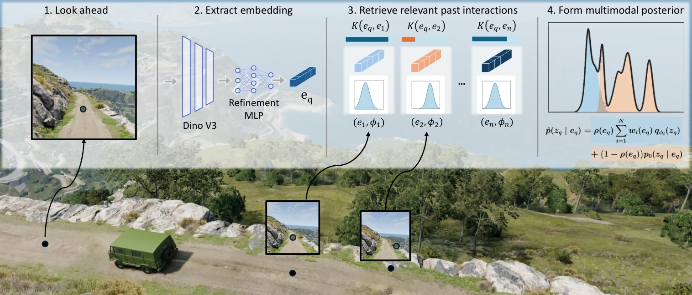
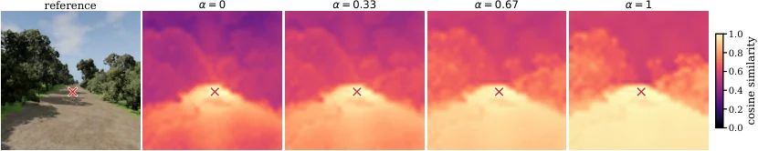
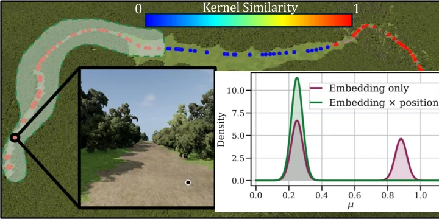
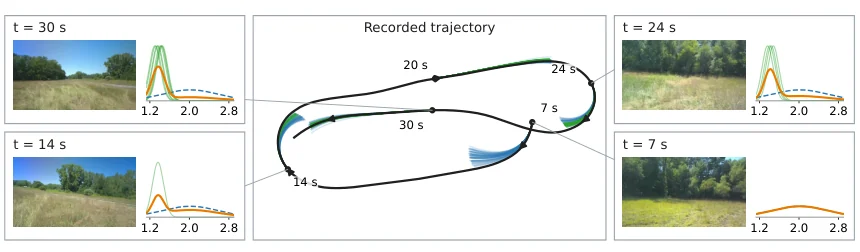

超越语义类别：用嵌入条件高斯混合做在线物理参数估计
Beyond Semantic Classes: Online Physical Parameter Estimation via Embedding-Conditioned Gaussian Mixtures
用“连续视觉嵌入索引的交互高斯混合”替代语义类别：多模态后验保留干/冰两种摩擦状态，支持系数避免远查询过度自信。1e6 历史 + 1000 样本 GPU 15.22 ms；低摩擦段 9.304→8.135 s（12.6%）、均速 10.51→11.78 m/s、横向 RMSE 1.637→0.121 m；实车 18 次测量把 ADE 从 0.737 降到 0.628 m（14.8%）。
latency
lap time
RMSE
ADE
作者、单位与技术谱系 · Research context
作者与单位
研究脉络
- Ewen et al., RSS 2024（语义+属性贝叶斯推断）直接对照与上游关系：用语义类别聚合视觉与触觉测量，是本文最主要的语义基线来源；本文保留其“交互更新信念”的思想，去掉类别索引。[原文引用/说明]
- Djeumou et al., CoRL 2024（One model to drift them all）团队前作关系：用物理信息条件扩散模型做极限驾驶，提供了“条件生成先验”和轮胎参数化的技术积累。[原文引用/说明]
- Lew / Greiff / Subosits 的风险敏感 MPC控制下游关系：提供赛车场景的长时域轨迹优化与 MPC 跟踪框架，本文把后验均值嵌入其轮胎参数矩阵。[原文引用/说明]
作者单位按论文首页标注为 RPI；致谢说明 Toyota Research Institute 提供资助，因此把 RPI–TRI 记为资助关系，不把作者个人现职写成 TRI。团队前作由参考文献中的同作者论文支持。
方法本质拆解 · What actually changed
是不是微调？
不是端到端训练控制器。视觉编码器 DINOv3 冻结，只训练一个轻量残差精化网络（HDBSCAN 原型 + 残差回归）；物理参数信念来自轨迹级逆建模（Normal-Inverse-Gamma / 高斯近似），不通过梯度回传。先验若用扩散模型，则离线训练在参数或高斯信念空间。
加了什么约束？
每个历史条目必须是高斯信念 (μ,Σ)，而不是点估计；后验权重由余弦核归一化；支持系数 ρ=M/(M+κ) 控制历史与先验的混合；嵌入残差有幅值惩罚 λ_cluster，噪声样本被拉回原嵌入。控制器侧用后验均值构造 stagewise 轮胎参数矩阵，属于间接约束。
推理/后端做了什么？
查询时算查询嵌入与历史嵌入的相似度、归一化权重、混合高斯；需要样本时从混合中采样（GPU 批量）。没有全局 BA、没有图优化；FIFO 缓冲保存历史，查询复杂度主要随历史条数增长，1e6 条时 15.22 ms。
方法本质是什么？
用连续视觉嵌入做“检索键”，把过去交互得到的局部高斯信念按视觉相关性重新加权，从而在不离散化地图的前提下保留多模态；再用核质量判断查询是否被历史支持，弱支持时退回生成先验。它改变的是地图索引与不确定性表示，不是轮胎模型本身；没有做的是在完整后验上做风险敏感控制。
输入查询区域视觉嵌入 + 交互历史 {(e_i, μ_i, Σ_i)} → 余弦核加权成显式高斯混合 → 支持系数与生成先验融合 → 1e6 历史 15.22 ms，低摩擦段通行时间 −12.6%、横向 RMSE 1.637→0.121 m。

桥接价值Bridge
桥接价值
在“感知 → 地图 → 控制”的链路上，语义类别是一个方便的离散索引，但它会把物理上不同的区域压进同一个高斯：同一块混凝土既可能是干路面也可能是黑冰，同一类“泥土”也可能有不同压实度。这篇的桥接价值是把地图索引从离散标签换成连续视觉嵌入，并让每个历史交互保留为独立混合分量，因此后验可以多峰。对于我们的地形/路面属性建图，这提供了一条不依赖语义词表的增量更新路径，也给出了“历史证据不足时如何回退先验”的显式机制。
方法与模块Method
方法摘要
每次短轨迹交互通过逆建模得到一个局部高斯信念 q_φ(z)=N(z;μ,Σ)，与对应区域的视觉嵌入 e 一起存入历史 D_N。查询嵌入 e_q 后，用余弦指数核 K_h 计算每个历史信念的权重 w_i，得到 p_hist(z|e_q)=Σ w_i N(z;μ_i,Σ_i)，这是显式混合，不需要离散化地图。为了区分“相对检索”和“绝对支撑”，作者用未归一化核质量 M(e_q)=ΣK_h 构造 ρ=M/(M+κ)，最终后验为 ρ·p_hist+(1−ρ)·p_0；先验可以定义在参数空间，也可以定义在高斯信念空间（扩散模型采样 (μ,Σ)），后者让融合后仍是显式混合。嵌入侧用 HDBSCAN 聚类得到原型方向，训练一个轻量残差网络把成簇样本拉向原型、噪声样本留在原处，α 控制精化强度。
可迁移模块
第一，混合后验可以直接作为地图层：每个网格/区域存一组 (μ,Σ,w)，下游规划器可以采样或取 CVaR，而不必先离散成类别。第二，支持系数 ρ 是一个很便宜的“可信度门”，可以防止在没走过的区域拿最近邻硬套。第三，把先验定义在高斯信念空间而不是参数空间，能让先验样本与历史分量同构，融合后仍是闭式混合，这个技巧可以搬到任何“历史 + 生成先验”的融合。第四，嵌入残差精化只改检索几何、不改表示离散化，适合我们用自己的户外图像微调 DINO 类特征。

证据Evidence
关键证据与数字
多模态实验（E1）：混凝土同时有高摩擦干区与低摩擦冰区，语义基线只能抓住高摩擦峰，本文保留两个分量；语义基线还会把低摩擦混凝土测量误用来拉偏泥土类别。词表外实验（E2）：混凝土不在词表时，语义基线的草地/泥土 KL 在首次接触混凝土后上升，本文保持稳定。运行时（Table 1）：1e4/1e5/1e6 条历史、1000 个样本，GPU 为 0.74/2.07/15.22 ms，CPU 为 0.81/4.01/49.84 ms。闭环（BeamNG）：9 次完整穿越 200–300 m 低摩擦段，通行时间 9.304±0.316 s → 8.135±0.007 s（12.6%），均速 10.51→11.78 m/s，横向误差 RMSE 1.637→0.121 m，航向误差 0.173→0.017 rad，侧滑 0.089→0.027 rad。实车：18 次测量后 ADE 0.737→0.628 m（14.8%），FDE 2.096→1.750 m（16.5%）。
边界与下一步Limits & Next Step
边界与风险
作者明确承认闭环自适应只在仿真中评估，实车实验是用记录的状态与控制做开环预测；控制器目前只用后验摘要（均值）而不是在完整分布上做机会约束；方法假设每次交互都能得到局部高斯信念，逆建模在更宽工况下的鲁棒性未解决。我们还需要核验：κ、核带宽与 α 的敏感性；HDBSCAN 原型在季节/光照变化下是否会漂移；混合分量数量随历史增长是否会被 FIFO 缓冲截断；以及“最坏情况”没有进入控制器时，多模态后验的实际控制收益有多大。
下一步实验
建议先把这套后验接到我们现有的地形/路面地图上，用同一段户外序列比较“语义类别 + 单高斯”与“嵌入混合 + 支持系数”两种索引，指标同时报参数误差、KL 与下游规划的成功率。第二步做在线增量实验：固定 κ 与带宽，改变历史容量（1e3/1e4/1e5），看 15 ms 级查询在真实更新频率下是否够用。第三步把完整混合而不是均值喂给机会约束 MPC，验证多模态是否真的降低低摩擦入口的超调。最后在实车上补一个闭环低速试验，而不是只做记录轨迹的开环预测。



